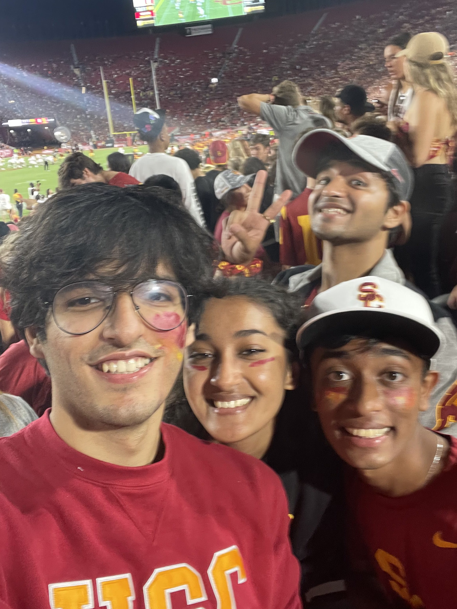
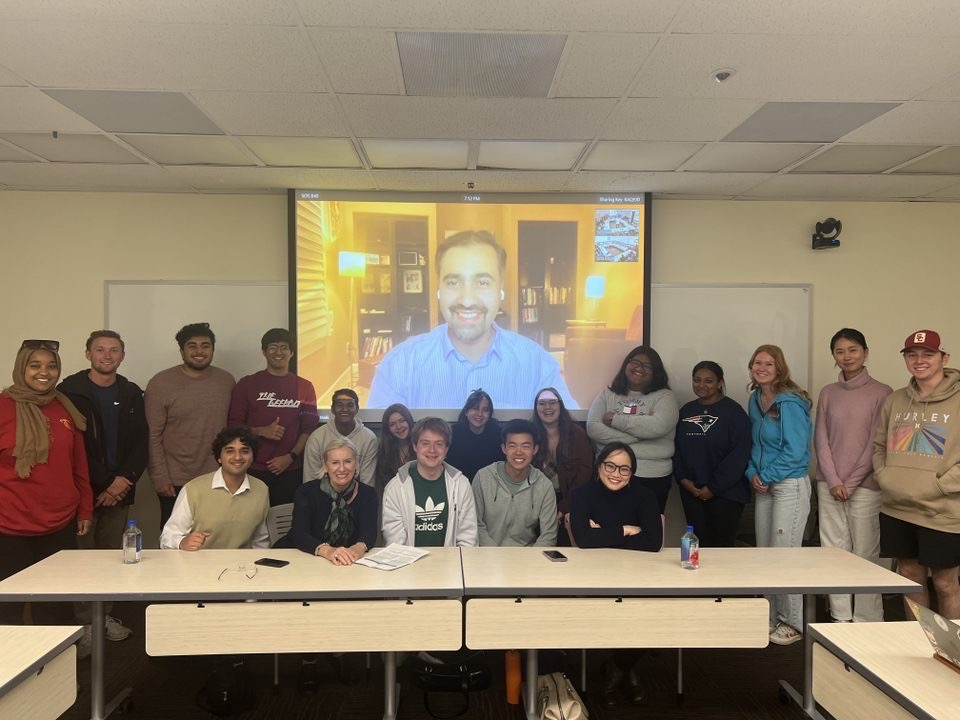

Nakul Malik
University of Southern California
Economics and Data Science (BS)
Expected Graduation: May 2025
Hello and welcome to my portfolio! I'm Nakul Malik, a passionate data enthusiast on a journey at the intersection of Economics and Data Science. My academic journey started at South City International School in Kolkata, where I honed my leadership skills as School Captain and varsity team captain during my Junior and Senior years. In 2021, I embarked on a new chapter as an Economics Major at the University of Southern California. As an ardent learner, I made a pivotal transition into the dynamic realm of Economics and Data Science during my junior year, and I've been dedicatedly exploring this fascinating field ever since. My commitment to academic excellence has earned me a place on the Dean's List every semester since joining USC, a testament to my relentless pursuit of knowledge.
Beyond academics, I thrive on engaging with my peers and contributing to our vibrant academic community. As a sophomore, I assumed the role of Supplemental Instruction Leader for ECON 317: Introduction to Statistics for Economists, sharing my passion for data analysis and statistics with fellow students. Additionally, I actively participate in several student-run organizations that align with my diverse interests. Currently, I serve as the Vice-President for 'Students For South Asia', Social Chair for the USC Dornsife 'Economics Association', and Vice President of Logistics for 'International Student/Young Pugwash' at USC.
I'm excited to share my Data Science journey and showcase the projects that have shaped my understanding of this ever-evolving field. Join me as we explore the power of data and its transformative potential. Let's connect and explore the exciting world of data-driven insights together!
For more information, check out my resume!